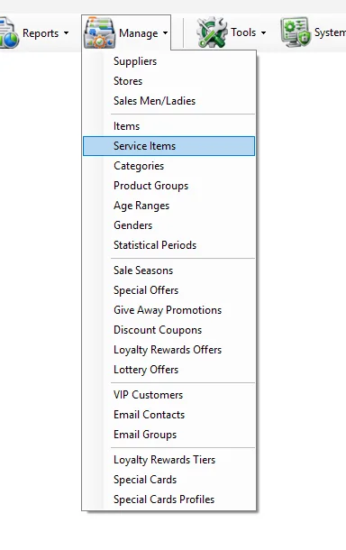
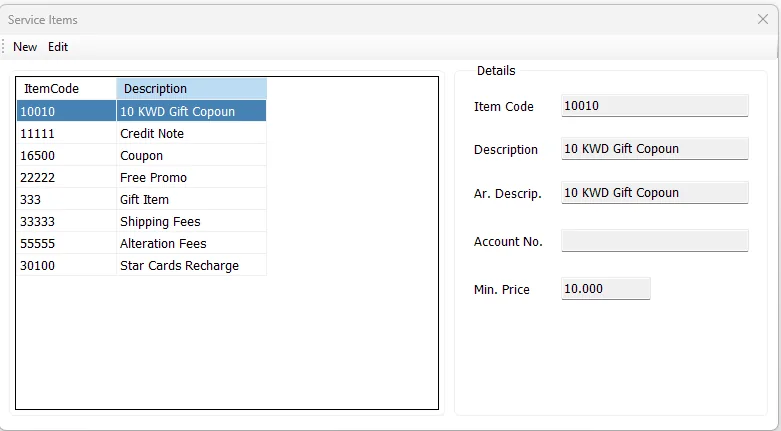

Retail service
Create an alteration or shipping charge
Add a Service Item with its account mapping and minimum price so it can be used by the relevant sales workflow.
Service Items are non-merchandise sales items maintained separately from the normal fashion/item master. Examples can include coupons, gift items, shipping fees, alteration fees and other service-type charges. IMS stores them as service records and uses them in sales workflows, service-value reporting and selected Special Card functions.


A Service Item is stored in the IMS item master with Type = Service. Unlike a normal merchandise item, it does not require Style/Color/Size merchandise maintenance. IMS creates the technical service-item structure automatically when the service is saved.
The list on the left displays the available Service Items by ItemCode and Description. Select a row to show its details on the right.
| Field | Meaning |
|---|---|
| Item Code | Unique service-item identifier. For a new Service Item, IMS also uses this value as the service barcode. |
| Description | Required English description. |
| Ar. Descrip. | Required Arabic description. |
| Account No. | Required financial/account mapping for the Service Item. |
| Min. Price | Required service selling/minimum price. IMS stores the value as the service's applicable sales price. |
All five fields are mandatory. IMS creates the Service Item in the main item master with the technical service-item defaults required by the rest of the system.
The Item Code identifies the Service Item and remains fixed while editing an existing record. Click Cancel to leave edit mode without saving the changes.
Service Items and normal merchandise ultimately share the IMS item master, but they are maintained through different screens:
| Normal Items | Service Items |
|---|---|
| Maintained in Manage → Items. | Maintained in Manage → Service Items. |
| Use Style, Color, Size, Supplier, Brand, Category and other merchandise classifications. | Use a simplified service definition focused on code, descriptions, account and price. |
| Type = Item. | Type = Service. |
Because Service Items are stored as Type = Service, IMS can separate service revenue from merchandise sales in the reporting layer.
The Service Items screen can also be opened as a selector from the Special Cards Profiles workflow. In that mode, New becomes Select and editing is hidden, allowing the user to choose an existing Service Item as the item used for funding/recharging a Special Card profile.
If no Service Item exists for that purpose, IMS directs the user to open Manage → Service Items and create one first.
Add a Service Item with its account mapping and minimum price so it can be used by the relevant sales workflow.
Use Main Sales Report → Service Only or the Services Amt fields in store and salesperson reports.
Select an existing Service Item from the Special Cards Profiles workflow.